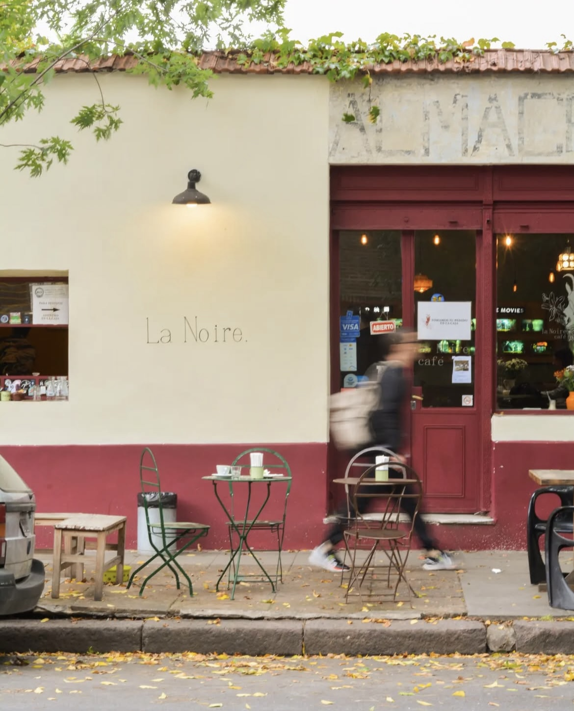

La Noire Café
Ambiente cálido, café de especialidad y un patio interno de mucha paz. Ideal para tardes largas de estudio con buena iluminación y calma.
Acá comparto mis cafés favoritos para estudiar, playlists para concentrarte y lugares que inspiran foco y tranquilidad.
Hoy en día, muchos de nosotros estudiamos y trabajamos desde casa, siempre desde el mismo ambiente y el mismo escritorio. Por eso, quise armar este espacio para compartir mis cafés preferidos para estudiar: lugares tranquilos donde sea fácil concentrarse, cambiar de aire y salir un poco de la rutina diaria.
Además, sumé algunos artículos y playlists que fui encontrando en el camino, que me ayudan a mantener el foco o simplemente disfrutar más del momento. ¡Ojalá te sirvan tanto como a mí!
Ambiente cálido, café de especialidad y un patio interno de mucha paz. Ideal para tardes largas de estudio con buena iluminación y calma.
Espacio moderno con mesas amplias, tranquilidad y atención excelente. Cada plato te va a tentar.
Ya sea en Villa Ortúzar o en Núñez, este café tiene ese aire canchero, buena música y café perfecto para acompañar tus apuntes.
Una playlist que uso cuando necesito máxima concentración. Jazz instrumental, sin letras, suave y envolvente.
Encontré esta nota que recopila algunos de los mejores lugares para trabajar o estudiar en la ciudad. Vale la pena guardarla y recorrerlos.